by Creative System Design
教務の複雑な全工程を、一つの流れへ。
日々の学習データを蓄積し、一人ひとりの成長と進級を導く。
カリキュラム策定から時間割編成、Googleカレンダー同期、出席登録、小テスト連動、多重評価の比率自動合算、そして進級判定会議資料の1クリック出力まで。教員のExcel手作業をゼロにし、蓄積されたデータで学生の学習停滞を早期に検知・支援します。
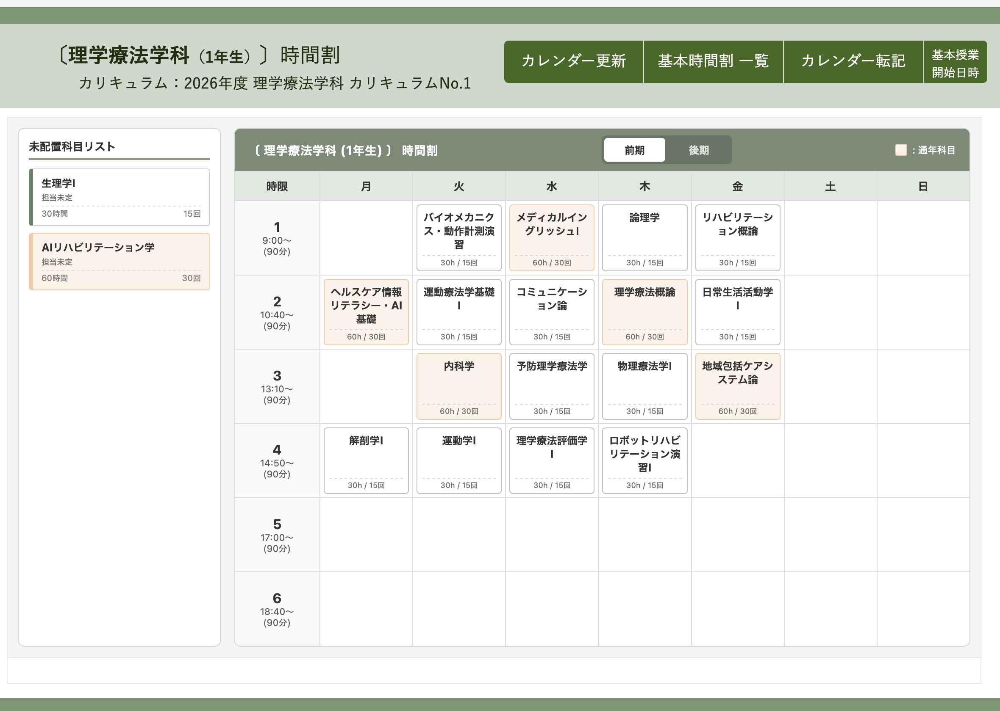
単位・時間数基準照合から15回講義シラバス・教科書管理まで完結。
未配置トレイから配置、年間一括展開。Googleカレンダーと即時同期。
時限別タップ出席登録。学生は手元のスマホで予定・出席率を確認。
小テスト比率設定で自動集計。進級判定会議資料をワンクリック生成。
策定から日々の運用、学生の手元まで流れるように繋がる 「教務基本フロー」
カリキュラム・シラバス設定から、基本時間割の編成、Googleカレンダーによる全校共有、授業直後の出席登録、学生スマホ連携までを一気通貫で管理します。
カリキュラム策定 ＆ 15回シラバス・教科書管理
年度・学科別の総単位数・総時間数を自動計算しながらカリキュラムを構築。各科目の15回分講義計画シラバス作成、指定テキスト・出版社管理まで一体化。
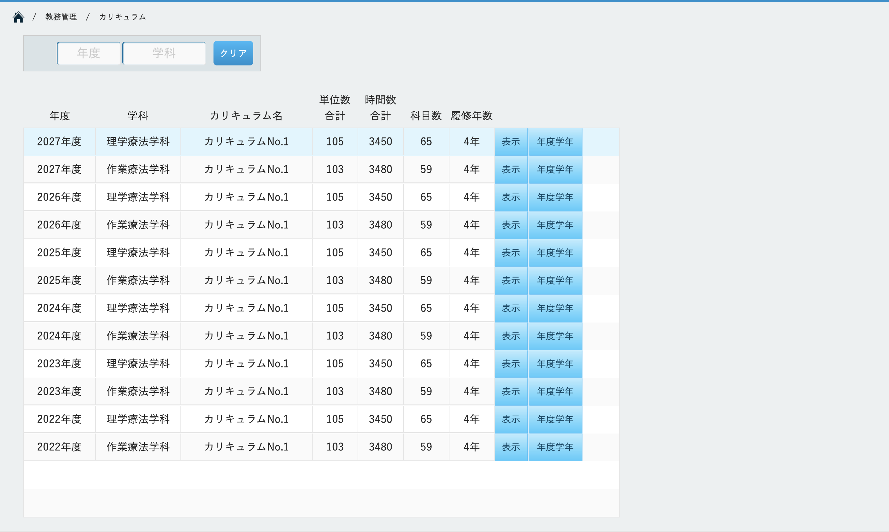
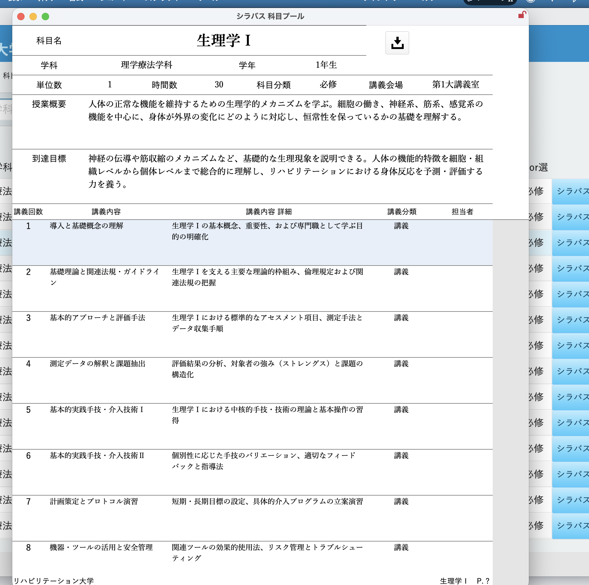
基本時間割編成 ＆ 年間Googleカレンダー同期
未配置科目トレイから曜日・時限へスムーズに時間割を編成。「カレンダー転記」ボタンで年間スケジュールへ一括展開し、Googleカレンダーとリアルタイム同期。
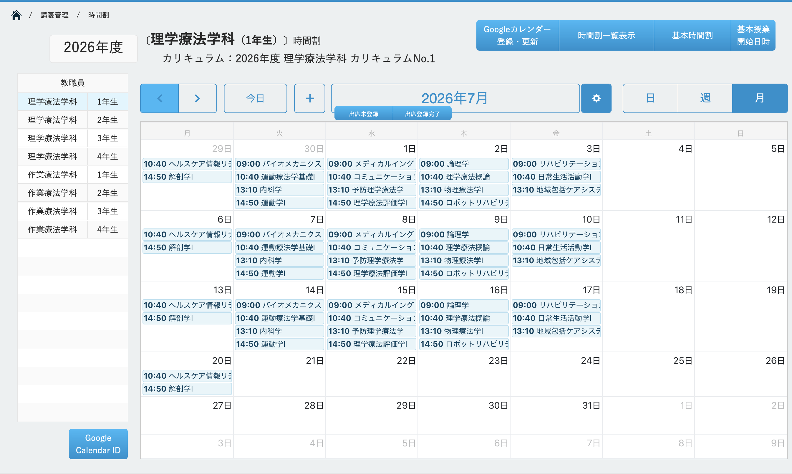
時限別出席登録 ＆ 科目別出席マトリクス即時集計
講義終了後すぐに時限別の出席状況をワンタップ登録。クラス全体・科目別の出席率や欠席・遅刻・早退がリアルタイムに集計され、出席不足予備軍を自動検知。
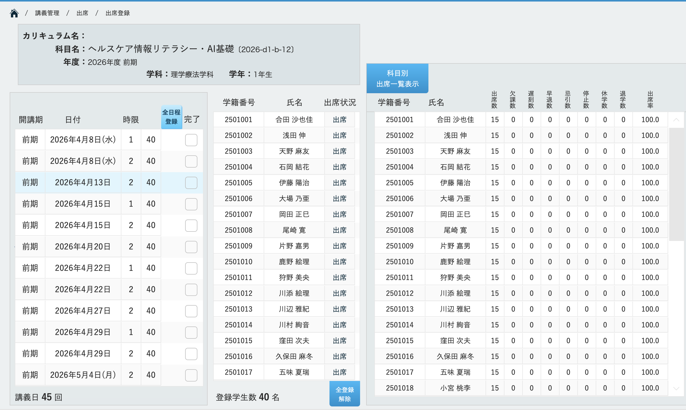
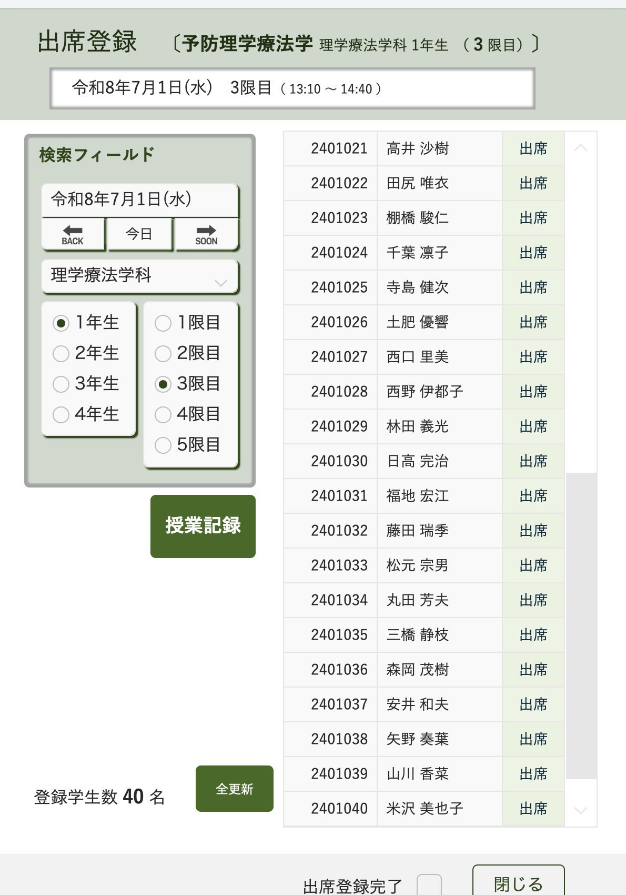
学生スマートフォンポータル（授業予定・出席・成績）
学生は自分のスマホから当日の講義予定、教室、出席状況、小テスト結果をいつでも確認可能。自己管理意識を高め、教務窓口への確認問い合わせを激減。
日々の小テストから進級判定まで “データドリブン教育” の真価
講義直結の小テスト作成・PDF出力から、小テスト・定期試験の比率自動合算、学習停滞予兆の早期検知、進級判定会議資料の1クリック出力までを実現。
講義記録連動の小テスト作成 ＆ 問題・解説PDF即時出力
講義の実施内容・課題から小テストをその場で即時生成。一問一答・記述・五択問題に対応し、問題用紙と解説付き模範解答をボタン1つでPDF自動組版。
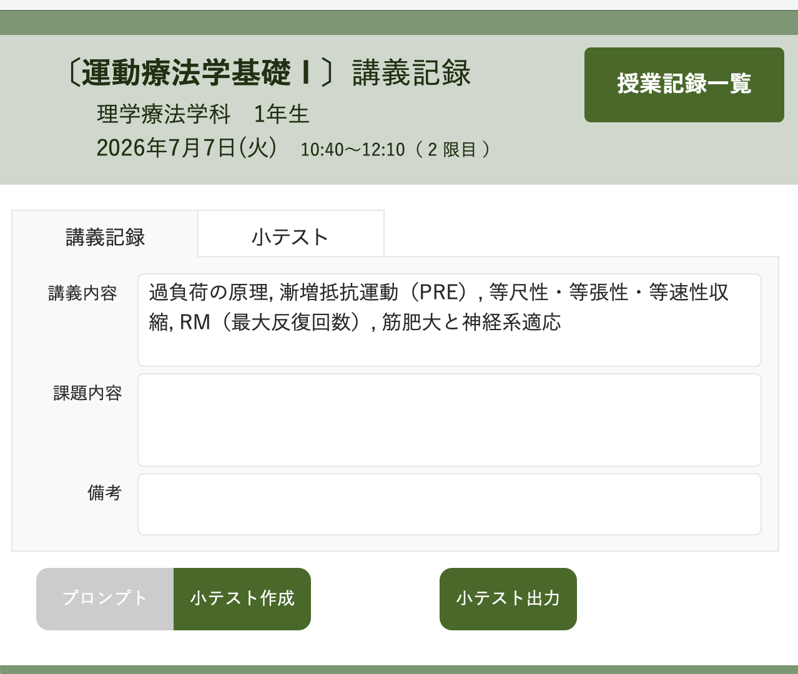
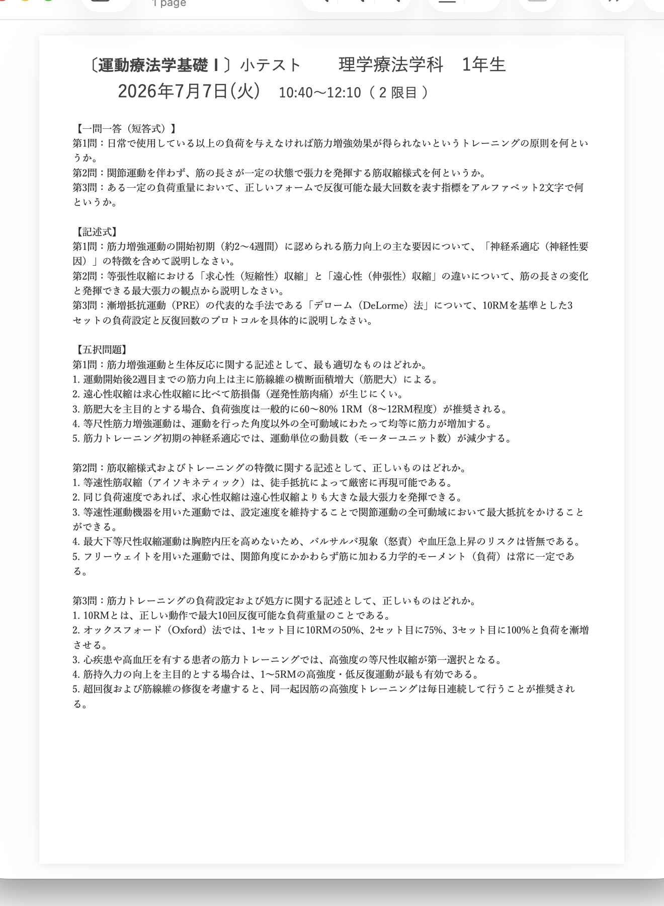
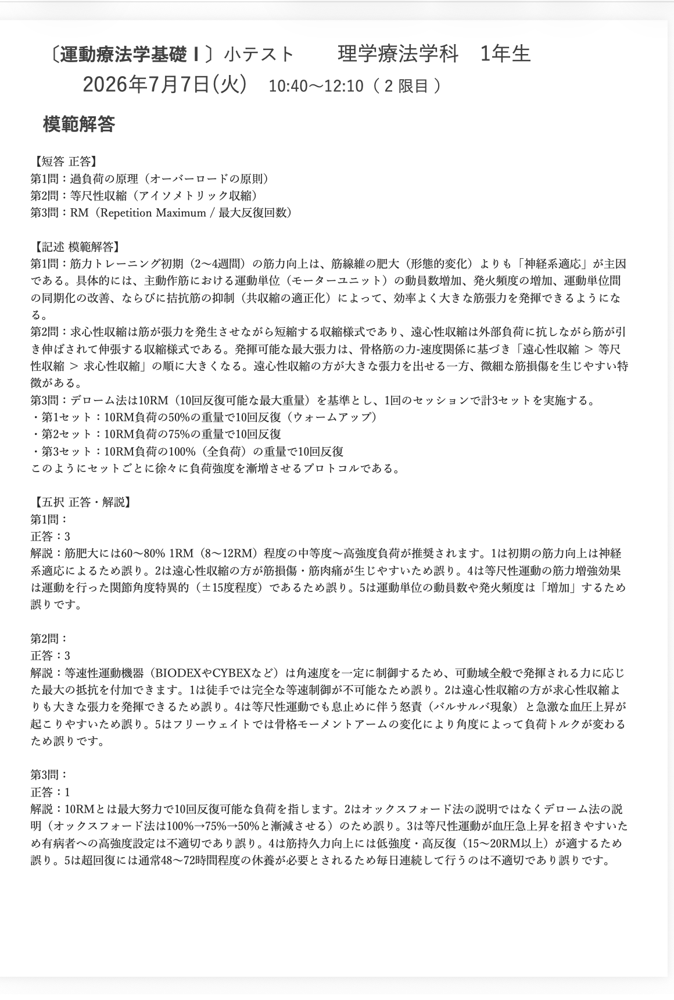
全試験の点数集約 ＆ 配分比率による最終成績自動合算
小テスト、定期試験、実技試験などの全点数を一元集約。「小テスト30% ＋ 中間20% ＋ 期末50%」など科目特性に応じた比率を設定し、最終総合点を自動算出。
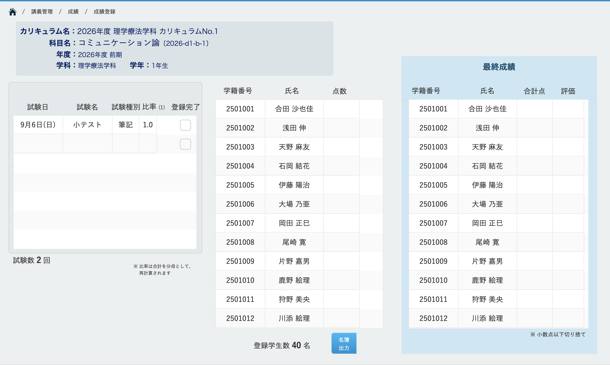
日々のデータ蓄積が拓く「つまずきの早期検知 ＆ 個別指導」
小テストの推移と出席率のクロス分析により、定期試験を待たずに学力停滞やドロップアウトの兆候を早期発見。教員間の情報共有と迅速なフォローを実現。
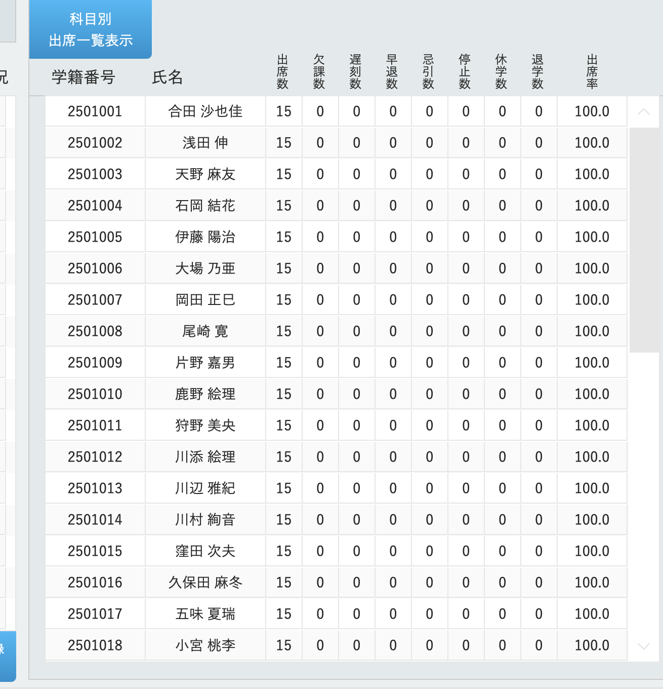
小テスト得点下降＋直近遅刻傾向を自動検知。
試験前の早期面談・補講で脱落を未然防止。
教務公式帳票 ＆ 進級判定会議資料のワンクリック出力
クラス週間出席簿、科目別出席簿、成績一覧表、そして出席・成績基準を網羅した進級判定会議用総合シートをボタン1つで即時生成。Excel手作業をゼロに。
| 学籍番号 | 氏名 | 出席率 | 通期GPA | 単位 | 判定 |
|---|---|---|---|---|---|
| 2501001 | 合田 沙也佳 | 98.2% | 3.45 | 28/28 | 〇 承認 |
| 2501002 | 浅田 伸 | 94.0% | 2.90 | 28/28 | 〇 承認 |
| 2501003 | 天野 麻友 | 81.5% | 2.15 | 24/28 | △ 要審議 |
教務DXの導入で得られる 「3つの劇的インパクト」
教職員の膨大なExcel集計・時間割調整ストレスを解消しながら、学生の学習停滞を早期に発見・支援するデータドリブン環境を実現します。
ワンタップ出席と比率自動合算で、学期末の膨大な手集計作業を完全にゼロへ。
学生スマホポータルで予定・教室・出席状況・小テスト結果を自己確認。
出席基準・成績基準を自動判定し、会議用総合資料をボタン1つで即時出力。
柔軟な運用基盤（Claris FileMaker × クラウド）
校内オンプレミス運用からAWS/クラウド共有、教員のiPad端末利用まで柔軟に対応。学校固有の評価基準やカリキュラム体系に合わせた個別アドオン開発も可能です。
医療系専門職の厳格なカリキュラム要件に適合
現行Excel様式・評価基準の確認
科目・教員・学生データの移行
時間割編成・出席登録の体験
新学期からのフル稼働スタート
医療系専門学校への導入実績
PT/OT現場に即した実用設計
専任伴走サポート体制
初期設定から運用まで丁寧に伴走
厳格な学籍情報セキュリティ
通信暗号化・詳細な権限管理
貴校の現行時間割・カリキュラム様式に合わせて実際の画面をお試しいただけます
最短3営業日でトライアル環境をご用意。お気軽にお問い合わせください。